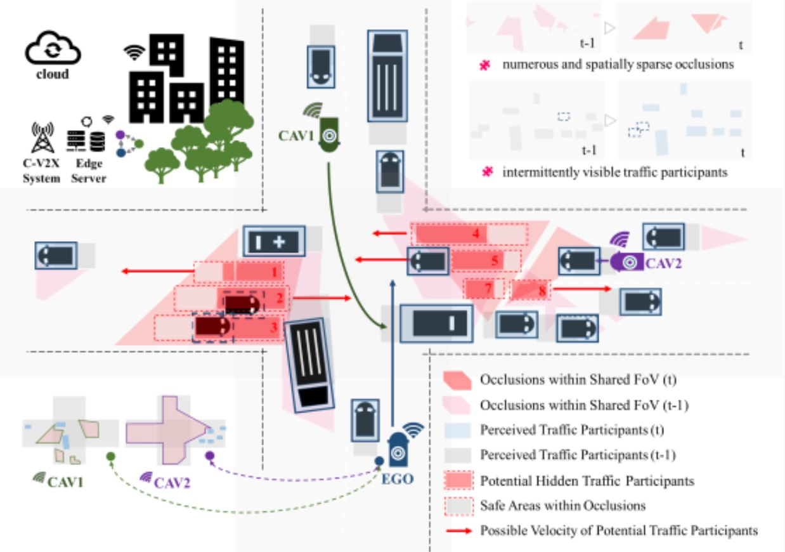
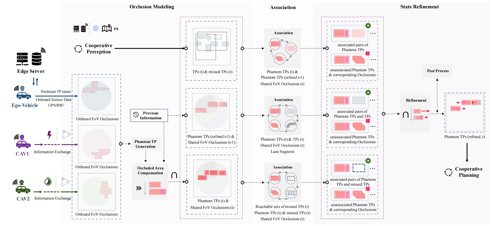

Cooperative Occlusion Awareness in Trajectory planning for Connected and Automated Vehicles based on
Reachable Set Prediction
Advanced Network Architecture Research Laboratory, Osaka University
Hao Su, Arakawa Shin’ichi and Masayuki Murata

Scenarios of interest

Proposed Method
Occlusion-aware planning with cooperative perception. CAVs can mitigate occlusions by sharing perception information. Since CAVscannot always
maintain optimal perception perspectives, traffic participantsmay still lie within their shared occlusions simultaneously. By tracking residual occlusions within the shared FoV, the feasible states of potential hidden traffic participants can be refined, thereby assisting CAVs intrajectory planning and
achieving an enhanced balance between traffic safety and efficiency. During this process, numerous and spatially sparse occlusions and intermittently
visible traffic participants need to be handled.
Abrstact
Achieving safe and efficient navigation in urban environments, where occlusions frequently occur, remains a persistent challenge for autonomous
driving. In response, cooperative perceptionprovides an effective means to enhance perception capabilities and mitigate occlusions. Despite recent
progress, the subsequent inference of motion states for potential traffic participants within residual occlusions shared across multiple agents has received limited attention, where the amount and sparsity of occlusion growth. In this paper, considering these issues, we propose a cooperative occlusion
awareness model that performs occlusion tracking to narrow the feasible state space of potential participants for reachability analysis, facilitating less
conservative behavior while maintaining safety. By analyzing the variations of occlusions within the shared field of view of multiple connected agents
across frames, as well as their interactionswith surrounding traffic participants,the existence intervals and velocity bounds of potentially participants are refined. The proposed model consists of three sequential modules, including occlusion modeling for the potential traffic participantstates, occlusion
associationfor discovering correspondences between occlusions across frames and surrounding traffic participants,as well asstate refinement for
eliminating unreachable states. Simulations across diverse occlusion scenarios demonstrate the effectiveness and generalizability of the proposed
model over baselines relying solely on onboard sensors or object-level fusion.